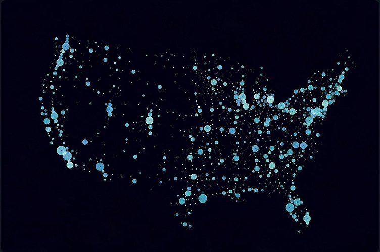

<!doctype html><html lang="en"><head><meta charset="utf-8"><meta name="viewport" content="width=device-width,initial-scale=1"><title>Clinical Trials · NeuroDiscovery AI</title>
<link href="https://fonts.googleapis.com/css2?family=Instrument+Sans:wght@400;500;600;700&display=swap" rel="stylesheet"><link rel="stylesheet" href="site.css"><script>(function(){var d=document.documentElement;function f(){var w=window.innerWidth;if(w>=1100){d.classList.add("fz");d.style.zoom=w<1920?String(w/1920):""}else{d.classList.remove("fz");d.style.zoom=""}}f();addEventListener("resize",f)})()</script></head>
<body data-page="ct"><main id="page"></main><script src="site.js"></script><script>
render([
['hero',{img:'ct-hero.jpg',video:'ct-dna.mp4',vfill:.5,vfpos:'72% center',vbox:[528,8,1296,729],h:'The fastest way to accelerate trial enrollment with neurology-specialized clinical AI',p:'From protocol to enrollment-ready patients in weeks. Powered by 6M+ longitudinal neurology records and an intelligent platform that accelerates every stage of recruitment.'}],
['cards',{h:'Capabilities that transform trial recruitment',p:'Precision patient matching, site optimization, real-time insights, and continuous improvement—powered by AI.',items:[
 ['bars','Precision Patient Matching','Translate protocols into patient rosters with AI-powered discovery across 6M+ longitudinal neurology records. Identify high-confidence candidates from our provider network spanning all neurological conditions. From protocol submission to patient roster: one day.'],
 ['screen','Site Selection &amp; Optimization','Pair your patients with trial sites based on real data—patient overlap, site capacity, historical enrollment performance. Eliminate site selection guesswork and reduce onboarding delays. Data-driven pairing maximizes spread efficiency across your entire trial network.'],
 ['search','Real-Time Trial Insights','Monitor enrollment velocity, site performance, and patient screening outcomes in live dashboards. Ask natural language questions about trial data—patient eligibility, demographics, enrollment trends—and get instant answers. Adjust strategy on the fly without manual reporting required.'],
 ['loop','Continuous Improvement Loop','Feasibility data from each recruitment cycle automatically refines future cohorts. Patient response rates, site engagement, screening outcomes—all feed back into smarter iterations. No manual rework. Each trial makes the next one more efficient.']]}],
['raw',{html:`<section class="alt"><div class="wrap"><h2 class="h2 reveal">1:1:1 trial acceleration</h2><p class="sub reveal">From protocol to screening-ready patients in a proven timeline.</p><div class="tl">
${[['users','1 Day','Patient Cohort Identification','Translate your protocol into a precision patient roster. AI-powered discovery identifies all eligible candidates from our provider network spanning all neurological conditions across 6M+ records.'],['send','1 Week','Patient Outreach Ready','Sites receive optimized candidate lists paired to their capacity and enrollment potential. Outreach campaigns launch at scale—multiple sites, multiple cohorts, maximum efficiency across your trial network.'],['note','1 Month','Screening-Ready Patients','First patient cohorts reach screening qualification and enrollment begins. Real-time dashboards track progress, site performance, and engagement. Dynamic optimization happens from day one.']].map(([i,t,h,p],n)=>`<div class="st reveal"><span class="num">0${n+1}</span><div class="card"><div class="t"><span style="border:0;padding:0;width:30px;color:var(--blue)">${ic(i)}</span><span>${t.toUpperCase()}</span></div><h4>${h}</h4><p>${p}</p></div></div>`).join('')}
</div></div></section>
<section><div class="wrap"><h2 class="h2 reveal" style="max-width:1000px">One of the largest neurology provider networks in the nation</h2><p class="sub reveal">Network spans community practices to major neurology provider networks—all conditions, all sites ready to enroll.</p>
<div class="mapgrid"><div class="reveal">
<div class="mstat"><b data-v="100+">100+</b><h5>Active trial sites</h5><p>Community practices and major neurology provider networks across the US</p></div>
<div class="mstat"><b data-v="1,000+">1,000+</b><h5>Participating neurologists</h5><p>Ready to enroll patients across all your trial indications</p></div>
<div class="mstat"><b>All</b><h5>Neurological conditions</h5><p>Rare disorders to high-volume indications covered across our network</p></div>
<a href="contact.html" class="cta wide">See sites in your indication <b>↗</b></a></div></div></div></section>`}],
['impact',{img:'ct-impact.jpg',h:'Proven trial outcomes for sponsors',items:[
 ['chart','Accelerated enrollment launch','Protocol to enrollment-ready patients in a compressed timeline. Sites have pre-qualified candidates on day one, reducing ramp-up delays and getting your trial to its enrollment targets faster.'],
 ['doc','Higher quality patient matches','AI-driven screening reduces manual review overhead and improves candidate quality. Every patient in your cohort meets protocol criteria—fewer false positives, higher screening-to-enrollment conversion.'],
 ['dollar','Reduce cost per enrolled patient','Sites spend less time screening failed candidates and more time enrolling. Fewer false positives reduce screening burden and recruitment team overhead. Direct cost savings on the recruitment phase.']]}],
['faq',{items:[
 ['How quickly can you generate a candidate cohort after we provide the protocol?','Within one day of protocol submission we deliver a precision candidate roster.'],
 ['What data delays can we expect from your provider partners?','Provider data refreshes continuously, so candidate lists reflect current patient status.'],
 ['How do you ensure patient identification accuracy without manual review bottlenecks?','AI screening against structured and unstructured data, with expert validation on criteria that need it.'],
 ['How do you handle site onboarding delays and provider outreach challenges?','Sites are already in our network and integrated, so outreach launches within a week.'],
 ['How do you ensure privacy and HIPAA compliance?','Identification runs inside provider environments; only consented patients are shared with sponsors.'],
 ['How long does it take to go live and start identifying patients?','Most sponsors go live within days of contracting.'],
 ['What neurological conditions and therapeutic areas do you cover?','All neurological conditions—from Alzheimer’s, MS, Parkinson’s and epilepsy to rare disorders.']]}],
['cta',{h:'How Fortune 500 pharma companies are accelerating trial timelines',p:'The world’s leading pharmaceutical companies choose NDAI to compress recruitment cycles and scale enrollment across their neurology trial portfolios.'}]
]);
</script></body></html>
